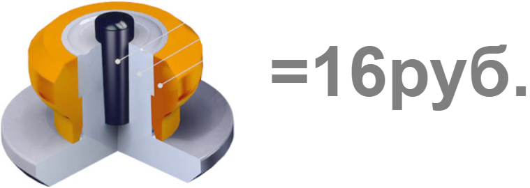

Преимущества ошиповки
Экономия денег на покупке новой резины
Работы проводятся высококвалифицированными мастерами
На проводимые работы предоставляется гарантия

После пары зимних сезонов протектор как новый, а шипов почти не осталось. В итоге, чтобы обеспечить себе безопасность на зимней дороге, приходится покупать новый комплект резины. Наша технология позволяет повторно ошиповывать б/у шины, продлевая срок их службы с минимальными затратами времени и денег! Уникальная форма шипа гарантирует ему надежную фиксацию в резине протектора.
Сотни довольных клиентов уже сделали выбор в пользу шиповки ремонтными шипами в Уфе в нашей команде. Наши клиенты сэкономили сотни тысяч рублей на покупке новых покрышек, восстановив ошиповку имеющихся покрышек, проверили качество сцепления на всех поворотах Уфы, тысячах поворотов Республики и даже других регионов нашей страны.
И если Вам надоело думать о том, как тронуться на подъемах, надоело входить в повороты на 15км/ч, надоело отказывать себе в ручнике – звоните нам! Решим Ваши проблемы. Качественно и надолго.
Мы являемся официальным установочным центром завода-изготовителя, и поэтому даём гарантию качества и обеспечиваем лучшую цену на эти услуги не только в Уфе и Башкортостане, но и во всем Приволжском ФО. Именно к нам приезжали шиповаться клиенты со всех городов Башкортостана, Усть-Катава, Магнитогорска, Саратова и Волгограда.
Звоните! Будем рады Вам помочь.Наша команда использует только ремонтные шипы, никакого «колхоза» и «китая». Так что же это за ремонтный шип? Это специальный трехкомпонентный шип, значительно больший по габаритам типовых, но при этом по массе несущественно тяжелее, так что в управляемости и динамике машина не потеряет, а даже приобретет. Но о приобретет чуточку позже.
Ремонтный шип устанавливается в отверстие из-под выпавшего шипа. В виду своего размера, шип плотно обтянут резиной. Установка в «старые» отверстия дает огромный плюс. Ремонтная ошиповка восстанавливает исходную конфигурацию пятная контакта. А ведь именно за грамотное расположение шипов и платится немалая часть стоимости комплекта резины! Устанавливая профессиональным оборудованием, мы никак не повреждаем покрышку. Технология полностью исключила элементы, способные хоть как-то повредить покрышку.
Сам корпус по высоте короче заводского, но фланец (шляпка) увеличен в диаметре до 12мм (заводские шипы имеют диаметр в 6,5-8мм). Эта шляпка шипа работает как якорь и обеспечивает устойчивость к вылету под действием поперечной к поверхности протектора центробежной силы, что не позволяет вылетать даже при скорости 180км/ч (наверно и при большей им ничего не грозит, но быстрее ехать по ледяной трассе откровенно было страшно). Эта же шляпка увеличивает устойчивость к касательным к протектору силам, возникающим при разгонах, торможениях, поворотах.
Полимерная втулка имеет очень низкую плотность, что позволяет снизить массу шипа, является дополнительным элементом сопротивления касательным силам и одновременно служит своего рода сальником, защищающим основание шипа и протектор от агрессивной среды.
Корпус шипа выполнен из сталь-алюминиевого сплава, что обеспечивает большую износостойкость шипа. При сравнении вида сверху очевидно, что площадь рабочей поверхности ремонтного шипа больше площади заводского шипа, и это вместе с большей устойчивостью шипа приводит к тому, что износ у шипа идет только сверху вниз, наш ремонтный шип со временем становится короче, но не тоньше, как заводские. А значит не будет болтаться в отверстии, а всегда на совесть стоять поперек площади контакта, обеспечивая максимально глубокое вгрызание в лед, тем самым Вы и приобретете улучшение динамики.
И конечно же, мы не могли обойти стороной ключевой элемент шипа – сердечник. У ремонтного шипа сердечник изготовлен из вольфрамового сплава (прямо как у бронебойных патронов, ну а что?) И он у нас длинный! Сердечник нашего ремонтного шипа протягивается до самой шляпки, придавай дополнительную прочность корпусу, не позволяя ломаться ему в районе ножки (привет владельцам Michelin X-Ice North 3 и Nokian Hakkapellita 7).
Ошиповка ремонтными шипами – возвращение былой хваткости Ваших шин.
Давно устоялось мнение о том, что восстановить шипы на шинах нельзя. До последнего времени так оно и было: поставить заводской шип в старое, изношенное отверстие бесполезно. Отверстия под шипы у шины изношены, диаметр увеличен, поэтому сил удержать шип в таком отверстии и резины нет. К тому же в процессе эксплуатации покрышек, протектор истирается. В купе с тем, что стандартные шипы имеют высоту 8,5 мм, очень скоро протектор становится слишком низким, и заводской шип уже будет торчать выше протектора. А следовательно, уже под действием много меньшей касательной к поверхности протектора силы шип вылетает при разгоне и торможении.
О «колхозе», или сыр в мышеловке.
Есть «умельцы», заявляющие, что могут восстановить ошиповку, просверлив новое отверстие и поставить рядом стандартный шип, или же типовой шип, уменьшенного диаметра и высоты (выпускаются и такие, для ошиповки велосипедных покрышек и обуви). Подкупает, согласен, копеечная цена этой услуги. Стоп! За что мы платим в зимней шипованной резине в первую очередь? За шипы. Почему же так аппетитен сыр в этой мышеловке? Да, и для шиномонтажа «колхозная» ошиповка очень выгодна: стоимость шипа при закупке составляет 0,3-1,0 рублей, а для клиента – 4-12 рублей. Просто Клондайк для нечистых на руку дельцов. Поэтому не удивляйтесь, если добродушные ребята посоветуют Вам «колхозную» ошиповку, нахваливая как только можно весь этот бред. Но почему не стоит доверять этой технологии?
Давайте разберемся. Во-первых. За что мы платим деньги, покупая Nokian, Continental, Goodyear и шипованную резину других производителей? Верно! За безопасность. А как она достигается? Трудом инженеров, которые выверяют верное расположении и конфигурацию, рассчитывают размеры площадки под установку шипа; качественная ошиповка совершаемая на заводе так же немаловажный фактор, обеспечивающий безопасность потребителя. Исходя из этого, что мы получаем при обращении к мастерам «колхозной» дошиповки?
Во-вторых. Сверление нового отверстия. При ошибке на доли миллиметра острое сверло рассекает капроновый корд, являющийся каркасом жесткости. Вы получаете якобы нормально ошипованную шину, а на первой выбоине у Вас возникает беговая грыжа – конструктивная гибель покрышки. Конечно, никто из умельцев не признается, что они повредили корд при сверлении. Слышите, как купюры убежали в магазин покрышек?
Во-третьих. Инженеры рассчитали, минимально необходимую площадку, для удержания шипа, но «колхозные» мастера Вам скажут, что и в 3-4 раза меньшей площадки будет более, чем достаточно. Не очень правдоподобно, верно?
В-четвертых. Если устанавливают велосипедные шипы. Опять же, шип тяжелый, без надобности его не делают большим, чем это необходимо, ведь это увеличивают неподрессоренную массу, снижает динамику и управляемость. Его делают максимально маленьким для целевого автомобиля. А тут Вы слышите, что велосипедные шипы так же эффективно остановят Вашу полуторатонную машину, как и заводские. Владельцы джипов за две тонны, как Вам? Хорошая шутка, если бы не стоила людям жизней.
Что в итоге. С подобной ошиповкой все ясно. Эта «технология», в лучшем случае – деньги на ветер, покрышку на свалку, а может и машину. Мы настоятельно рекомендуем задуматься об этом!
Вообще, преждевременная потеря работоспособности заводских шипов – процесс неизбежный. В конечном счете, сами производители заинтересованы в этом. Ведь это не прикольно, если Вы будете покупать новый комплект шипованных шин раз в 5-6 лет, намного приятнее производителю, если каждые два года Вы отсчитываете им свои кровные. С другой стороны, производители покрышек не рискуют делать протектор быстроизнашивающимся, ведь это прямой удар по репутации – плохие шины. А вот если протектор в идеальном состоянии, значит фирма хорошая, «Вы сами так ездили, что шипы потеряли», «Не виноватая я, он сам буксовал!». Мы глубоко убеждены, что отдавая такие деньги за шипованную резину, человек должен кататься, получая удовольствие от вождения, а не «тошнить», борясь за выживание каждого шипа.
Так и получается, что производителям нужны вылетающие шипы.
Мы же не работаем с производителями зимних шипованных шин, по сути своей мы портим им план продаж, ведь каждый наш клиент – несостоявшийся их. Мы работаем с заводом-изготовителем шипов. Т.е. наша репутация – это наши шипы. И мы делаем их лучше всех, и мы ставим их лучше всех.
Теперь немного о повторной ошиповке, и почему она необходима.
Высота протектора зимних легковых шин составляет в среднем 10мм. Техника безопасности допускает минимальный остаточный протектор в 4мм, после этого использование покрышки запрещено!
То есть ресурс протектора по износу составил 6мм. Вау, как круто! Но…
А что с шипами? У шипа за лед цепляется твердосплавный сердечник, который частично погружен в алюминиевый корпус шипа. Длина сердечника – не более 5,5мм, чаще 4,5мм. Из этой длины за корпус должно выступать 1,2мм, чтобы цепляться за лед. Примерно столько же должно оставаться в корпусе для удержания шипа. На износ остается не более 3мм, а чаще около 2мм. В результате получаем, что ресурс шипа на износ в 2-3 раза меньше, чем у протектора. И если заводской шип не выпал, при остаточном протекторе в 7-8мм его необходимо заменить, провести повторную ошиповку колес. Зачем, он ведь стоит еще! – возмутитесь Вы. Все дело в том, что не сегодня – завтра этот шип выпадет, сцепные качества снизятся. К тому же, чем больше шипов остается на зимней шине, тем меньше колесо будет пробуксовывать, тем самым намного снижая реальный пробег колеса. Только подумайте, сколько оборотов колесо скребется о снег, лед, а того хуже – об асфальт, когда вы застряли на подъеме?